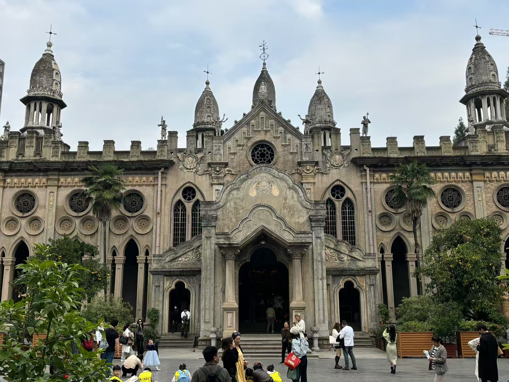
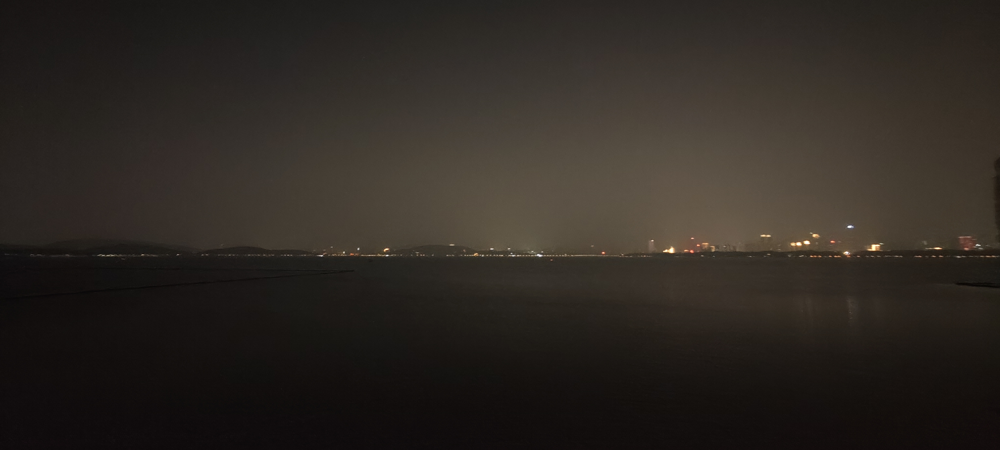
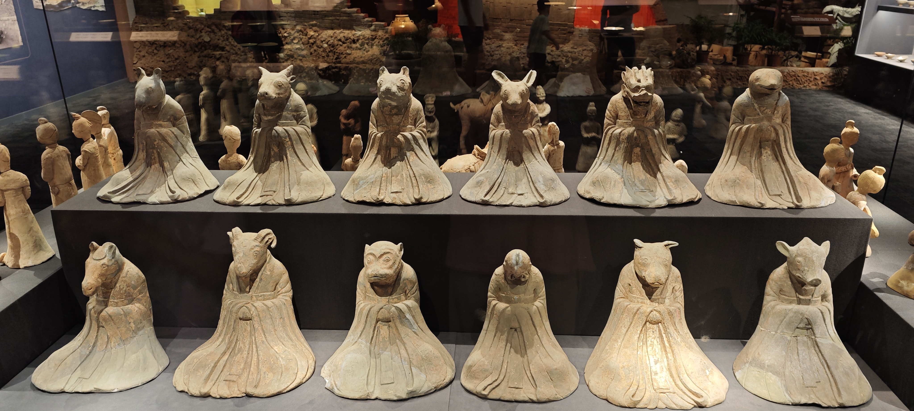
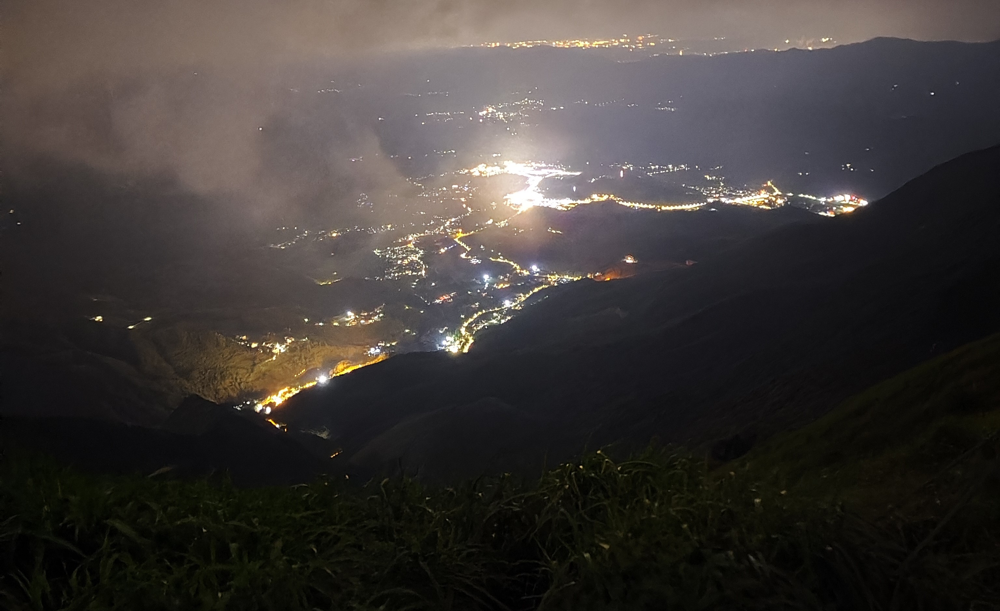

古德寺
古德寺保存着哥特式基督教教堂、罗马式天主教教堂、拜占庭式东正教堂、伊斯兰风格的清真寺风格，作为一座极具特色的寺庙，它和传统寺庙黄瓦红柱、飞檐翘角的大殿迥然不同。

东湖
东湖是与杭州西湖齐名的风景游览胜地，湖光山色，相映成趣，花木扶琉，绿树葱茏。杭州西湖以其妩媚多姿取胜，东湖则以楚国雄风，粗犷豪放见长。

武汉博物馆
感受历史的厚重和文化的熏陶，在博物馆触摸到时间的流逝，感叹个体的渺小。

武功山
海拔1918.3米，峰顶地势平坦，夏季气候凉爽，是观赏日出、高山草甸、神秘佛光、迷幻云海、悬崖峭壁和进香拜佛的最佳景区。